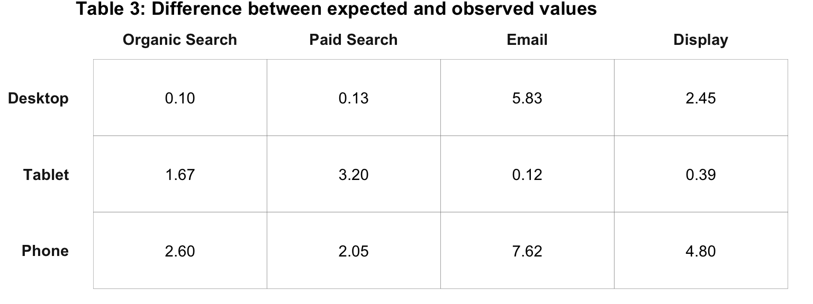

Let’s get a little wordy and a little Greek. The full title of this topic (phonetically) is “Cross Tabulations with a Chi-Square Test of Independence.” To really write it in a way that will make a statistician happy, it’s, “Cross Tabulations with a \(\chi\)2 Test of Independence.” What does that mean? Read on!
First off, the cross tabulation is a pretty stock method of displaying relationships between two variables, although the term itself may be unfamiliar. Basically, it’s just a two-dimensional matrix that represents the relationship between two variables with regard to some specific metric.
That matrix is pretty easy to understand (and it’s what Excel pivot tables often get used to create), but, in addition to the matrix itself, we can add an extra analytical step that is referred to as to as the “\(\chi\)2 test of independence.” This helps us understand how “real” (meaningful, significant, …) the relationship is between the variables.
To perform a \(\chi\)2 test of independence, the two variables need to be nominal in nature.
As an example, let’s consider the question: “Is there a relationship between last touch channel and device type?” We can create a cross tabulation to see a breakdown of these two variables.
In Table 1, the cells or the counts are obviously different. But, what we do not yet know is if that difference is due to a relationship between device type and channel, or is the difference really just due to randomness? To answer that question, a \(\chi\)2 test for independence needs to be conducted. This test is a test of the following hypothesis:
Note that we’ve stated our hypothesis in such a way as to be a hypothesis that there is no relationship. This is often called the null hypothesis and is often written H0.
Table 1 reflects the actual (or “observed) data from the two variables: device type and channel. To test the relationship, we first have to calculate the expected values for each combination of the variables.
To determine the expected number of sessions from desktop users who used organic search, we:
Mathematically, the formula would look like:
\[ \begin{aligned} sessions_{expected} &= \frac{r_1}{T} \times \frac{c_1}{T} \times T \\ &= \frac{100}{300} \times \frac{80}{300} \times 300 \\ &= .33 \times .27 \times 300 \\ &= 26.67 \\ &= 27 \end{aligned} \]
We then fill in the remaining expected values to produce Table 2.
Next, we need to compare the difference between the observed values in Table 1 with the expected values shown in Table 2. For each cell, we:
Let’s do that manually with our Desktop / Organic Search result:
Subtract the expected value from the observed value:
\[ \begin{aligned} &= sessions_o - sessions_e \\ &= 25 - 26.67 \\ &= -1.67 \end{aligned} \]
Raise it to the second power:
\[-1.67^2=2.78\]
Divide it by the expected value:
\[\frac{2.78}{27} = 0.10\]
We then repeat that calculation for each cell, as shown in Table 3 below.
Note: The difference between actual and expected value is referred to as “error.”" With some additional arithmetic operations, we could calculate the standard deviation. If we square the standard deviation, then we will have calculated the variance. Regardless of whether we’re using standard deviation or variance, we are working with error. Remember: all researchers – including web analysts – work with error. And error is just the difference between actual and expected values!

Now we sum the values for all cells shown in Table 3, which is 30.96. This is the “actual \(\chi\)2 value.”
To determine whether we can reject or fail to reject our hypothesis (the null hypothesis: _H0) based on the actual \(\chi\)2 value equal to 30.96, we need to determine what’s called the “critical \(\chi\)2 value,” and compare that to the the actual \(\chi\)2 value. To determine the critical \(\chi\)2 value, we need two inputs:
The degrees of freedom in the data set. This is determined by the formula, (R-1) x (C-1) where R equals the number of rows from Table 3 and C equals the number of columns from Table 3. In this example, the degrees of freedom is (3-1) x (4-1) = 6.
The alpha level (\(\alpha\)) we wish to use. This is the “significance level” that you choose, which is the allowed probability of making a “Type 1 error.” A Type 1 error is… a false positive. So, the smaller the \(\alpha\) you use, the harder it is to achieve significance, but the less likely you are to draw the wrong conclusion from the data. 0.05 is a pretty common \(\alpha\) level to use, but there is nothing particularly magical about that value. As a matter of fact, let’s get wild and crazy and use an \(\alpha\) of 0.1 for this example!
With these two inputs, we can look up the \(\chi\)2 critical value in any research textbook, using an online calculator, or referencing a table on the web.
With an \(\alpha\) of .1 and 6 degrees of freedom, the critical \(\chi\)2 value is 10.64.
We take this value and compare it to our actual \(\chi\)2 value (30.98). Since the actual \(\chi\)2 value exceeds the critical \(\chi\)2 value (10.64), we reject our hypothesis (H0). Does that seem like it’s going to be hard to keep straight? It can be! But, hold on to your pants as we come at this another way.
What we just did: We used the degrees of freedom and our selected \(\alpha\) to determine the critical \(\chi\)2 value, which we then compared to our actual \(\chi\)2 value.
What we’ll more commonly do: We can use the degrees of freedom and our actual \(\chi\)2 value to calculate the p-value, which, mathematically, is analogous to \(\alpha\), but is the value observed rather than a value selected. If our p-value is smaller than our selected \(\alpha\), then we can reject our hypothesis.
An important aside: While (\(\alpha\)) is defined as the allowed probability of making a Type I error, (\(\alpha\))’s cousin is the p-value, which is defined as the observed probability of making of a Type I error. By comparing the (\(\alpha\)) (i.e., allowed) to the p-value (i.e., observed), we can determine how comfortable we are with making a Type I error given the results of the statistical test. We’ll come back to this aside in a bit.
Think of it this way:
Does that make sense? In many cases, it is easier to simply have a statistical package return a p-value, and that value can then be compared to the selected \(/alpha\) value. Honestly, the world would be a better place if the standard practice, instead, was to compare the actual and critical \(\chi\)2 values instead of relying on p-values, but that’s a windmill that we’ll have to tilt at on another day.
By rejecting our hypothesis – which was that there is no relationship between device type and last touch channel – we can conclude there actually is a relationship between device type and last point of contact.
Based on these results, we could:
These recommendations should carry more weight because they are supported by a statistical test rather than just an eyeball test.
The cross tabulation with a \(\chi\)2 test for independence does provide some insight for the web analyst. But, the test is not considered terribly powerful. Indeed, it is referred to as a “low power test”" because it provides little insight beyond the statistical existence of a relationship between two variables.
Still, there are a number of reasons in support of using the cross tabulation with a \(\chi\)2 test for independence, including:
All of the above is a fairly laborious working through the mechanics of the \(\chi\)2 test for independence as part of a cross tabulation. While it may seem laborious and tedious in this fairly simple example, it’s actually so commonly done and mechanical that just a few lines of code in R can knock out the entire thing.
As a matter of fact, the steps above were actually coded in order to display the results. So, it turns out we have the data set already ready to go in a data frame called chi_square_example. Let’s look at the first few rows of it:
chi_square_example## device_category Organic Search Paid Search Email Display
## 1 Phone 35 15 10 40
## 2 Tablet 20 30 25 25
## 3 Desktop 25 20 35 20With that data, it takes all of one line of code in R to run a \(\chi\)^2 test for independence in R using chisq.test() base R function.
# The [,-1] just gets rid of the row names -- the 1, 2, 3 column
# in the above.
chisq.test(chi_square_example[,-1])##
## Pearson's Chi-squared test
##
## data: chi_square_example[, -1]
## X-squared = 30.978, df = 6, p-value = 2.559e-05So, how do we interpret these results? It’s fairly straightforward:
2.559e-0.5 or 0.00002559, which is much lower than 0.1.Revisiting our earlier aside: The line of code above gives us the actual \(\chi\)2 value and a p-value. We can actually use R (if we don’t want to consult a table) to get the critical \(\chi\)2 value using the base R function qchisq(). There’s a quirk that we’re not going to get into here to use it, in that we actually input 1-\(\alpha\) rather than just \(\alpha\) with that function. For this example, we used an \(\alpha\) of 0.1 and have 6 degrees of freedom, so we could use qchisq(1-0.1, 6), which returns 10.64. And, we would compare that to our actual \(\chi\)2 value of 30.98 and, thus, reject H0. This way, we never actually would use the p-value in the R output. But, as noted earlier, doing this is essentially the same as saying “the p-value is less than 0.1,” and we’re not going to delve into a case for one approach over the other here.
Neat, huh?